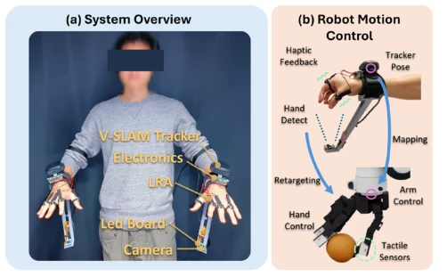
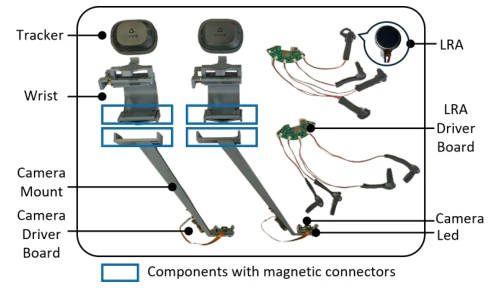
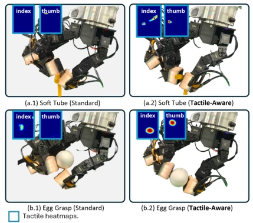
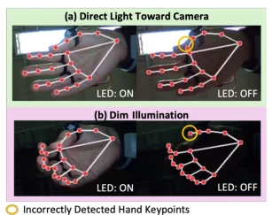
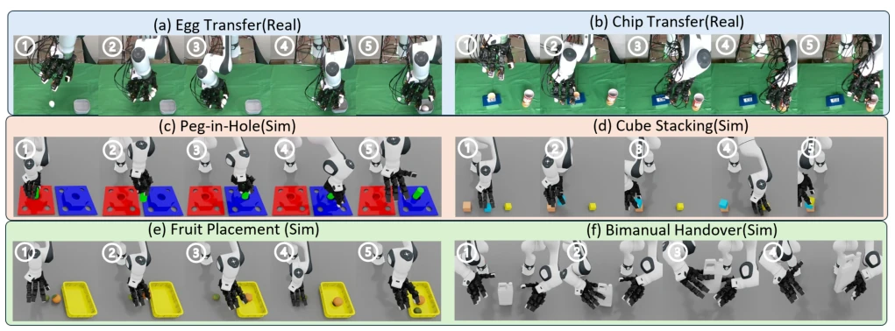
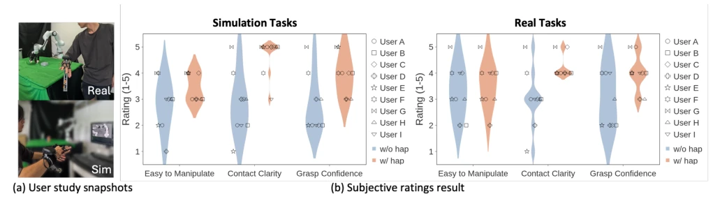
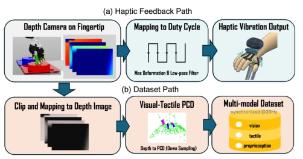

ViHaTeleop attempts to address the pain points of $10k+ systems with $550 "street stall" goods, a strategy that is quite audacious. The highlight lies in that it did not use expensive force feedback gloves, but instead used LRA rings and SLAM tracking, forcing "haptics" into low-cost visual teleoperation. User studies indeed proved that haptics can improve success rates, especially in simulation environments, this point deserves praise. But the complaints are also obvious: completion time became slower in some tasks, indicating "slow work yields fine products" is a double-edged sword in teleoperation. Additionally, the statistical power of 9 samples is a bit "small scale", although subjective scores are significant, the improvement magnitude of objective data fluctuates greatly across different tasks, even some tasks have negligible improvement. As for downstream imitation learning, although feasibility is proved, the data volume is too small, conclusions are slightly thin, like using a few bricks to prove a building can be built, logic passes but confidence is insufficient.
The core bottleneck of embodied intelligence lies in the lack of high-quality contact-critical operation data. Existing teleoperation systems have a serious "wealth gap": expensive systems (e.g., NuExo [6], >$10k) can provide force feedback but are too heavy and expensive, difficult to deploy on a large scale; while cheap systems (e.g., AnyTeleop [12], $50) are lightweight, they completely lack tactile feedback, causing operators to be unable to perceive contact onset and force magnitude, making it difficult to complete tasks like grasping fragile items or precision assembly. ACE [9] although improved visual tracking, its exoskeleton structure increased weight, and lacks tactile closed-loop. This paper aims to fill this gap, verify whether low-cost vibrotactile feedback can significantly improve teleoperation quality under matched visual conditions, and verify whether data collected thereby is sufficient to support downstream visual-tactile policy learning.

Fig. 1. Hardware overview and control architecture of ViHaTeleop. (a) The system consists of two bimanual wrist and hand configuration tracking modules. Each module uses a VSLAM+IMU tracker (HTC Vive Ultimate) for wrist pose tracking and a fisheye camera for hand configuration detection in real-time. LRA rings on the operator’s thumb, index, and middle fingers provide vibrational haptic feedback. (b) The captured wrist and hand configurations are mapped and retargeted to control a robotic arm (Franka) with a dexterous hand (LEAP Hand). Tactile sensors (9DTact) on the robot fingertips provide touch sensory feedback to the operator. quantified under matched with/without-haptic conditions. In our 9-participant study, haptic feedback produced descriptive success-rate gains across all tasks, wh

Fig. 2. Hardware Components. comprising four gestures, four lighting/LED conditions, and ten repetitions each (160 trials), LEDs reduced mean frame- to-frame landmark jitter by 39.6% under direct glare and 21.3% in low light, while increasing low-light detection from 98.3% to 100%.
ViHaTeleop constructed a closed-loop system from "human" to "robot" to "simulation". The overall process is: the operator wears a lightweight tracking module, the system captures wrist pose and hand configuration in real-time, mapping to Franka manipulator and LEAP dexterous hand; meanwhile, 9DTact sensors at robot fingertips collect tactile data, processed to drive LRA rings on operator fingers to produce vibration feedback. Innovations lie in: 1) Hardware lightweight: adopts HTC Vive Ultimate for VSLAM+IMU wrist tracking, paired with 160-degree fisheye camera and LED fill light, solved occlusion and lighting issues, whole machine only weighs 0.7kg. 2) Tactile perception enhancement: proposed "Tactile-Aware Retargeting", added fingertip parallelism constraint item on top of DexPilot, ensuring fingertips contact plane sensor (9DTact) parallelly, avoiding signal loss due to edge contact. 3) Simulation and reality unification: in Isaac Sim uses depth camera proxy to simulate 9DTact data, used for both real-time feedback and generating multi-modal point cloud data, achieving full process connection from data collection to policy training.

Fig. 3. Comparison of standard DexPilot retargeting vs. our tactile- aware extension on two manipulation tasks. (a) Soft tube grasping, (b) Egg grasping. Standard retargeting (left column) produces edge contact with negligible sensor signals, while our constraint (right column) enforces parallel fingertip alignment, enabling effective tactile sensing. Blue insets show tactile sensor heatmaps from thumb and index fingertips.

Fig. 4. Hand skeleton detection in challenging lighting: (a) direct glare toward camera; (b) low-light scene. LED illumination stabilizes detection. with adaptive functions that smoothly interpolate based on thumb-to-finger distance d:
The study includes two parts: 1) 9-person user study, comparing performance with and without tactile feedback in 6 contact-sensitive tasks (e.g., grasping eggs, peg insertion, stacking). Results show, tactile feedback made success rate of all tasks improve by 2.2% to 15.6%, subjective scores in contact clarity and grasping confidence significantly improved (p<0.05), but completion time varied by task (single contact tasks faster, multi-stage tasks slower). 2) Imitation learning verification: based on collected 50 demonstrations, train visual-tactile policy. In "peg insertion" task, visual-tactile policy success rate improved 17% compared to pure visual policy (10%->27%), proving effectiveness of tactile data for contact-sensitive sub-tasks. Ablation experiments show, after introducing fingertip parallel constraint, simulation stacking task success rate improved 15-20 percentage points.

Fig. 5. Experimental tasks for user study. Numbers indicate key stages in task progression. Real-world: (a) egg transfer to bowl, (b) fragile chip grasping. Simulation: (c) peg-in-hole insertion, (d) three-cube stacking, (e) fruit pick-and-place, (f) bimanual bottle handover.

Fig. 6. User study experimental setup and subjective ratings. (a) Experimental snapshots showing teleoperation in real-world (top) and simulation (bottom) environments. (b) Subjective ratings comparing without and with haptic feedback across nine participants. Error bars indicate standard deviation. Statistical comparisons use two-tailed Wilcoxon signed-rank tests; detailed values are reported in Sec. IV-D.

Fig. 7. Dual-purpose tactile proxy pipeline in simulation. A depth camera on each fingertip approximates 9DTact deformation. Top path (blue): the signal drives real-time haptic feedback to the operator via max-deformation extraction and PWM mapping. Bottom path (beige): the same depth data is converted to tactile point clouds and fused with visual observations into a synchronized multi-modal demonstration dataset for downstream policy learning.